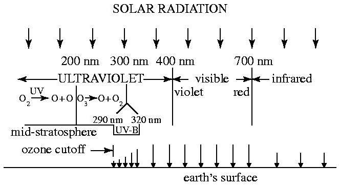
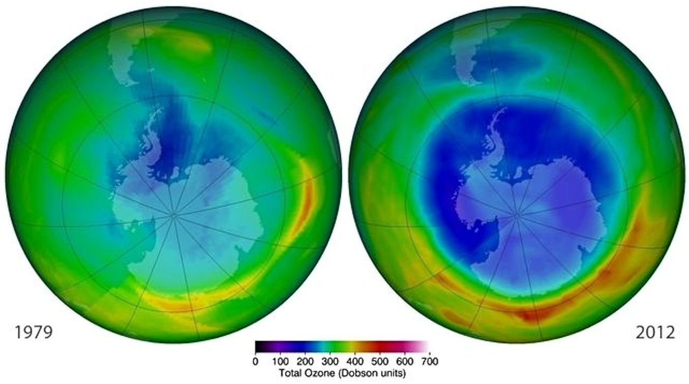
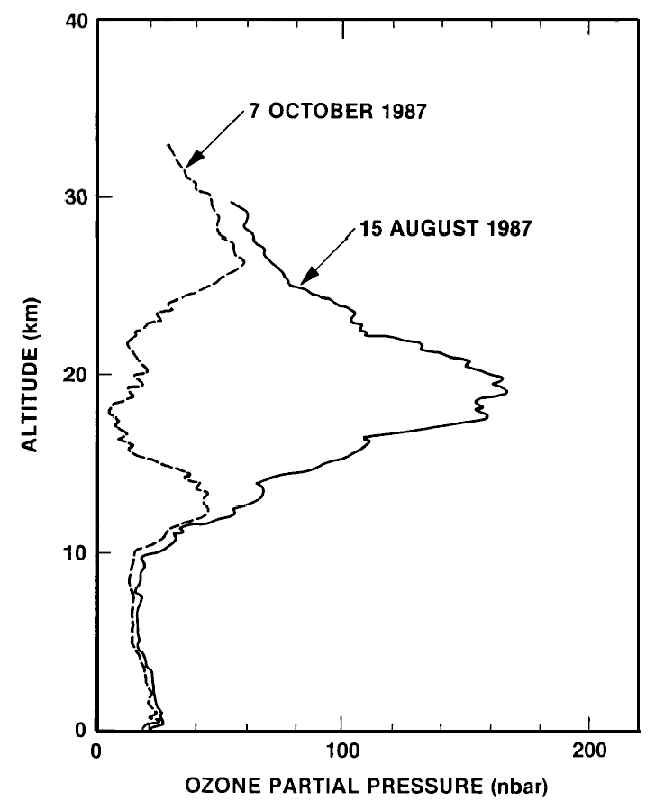
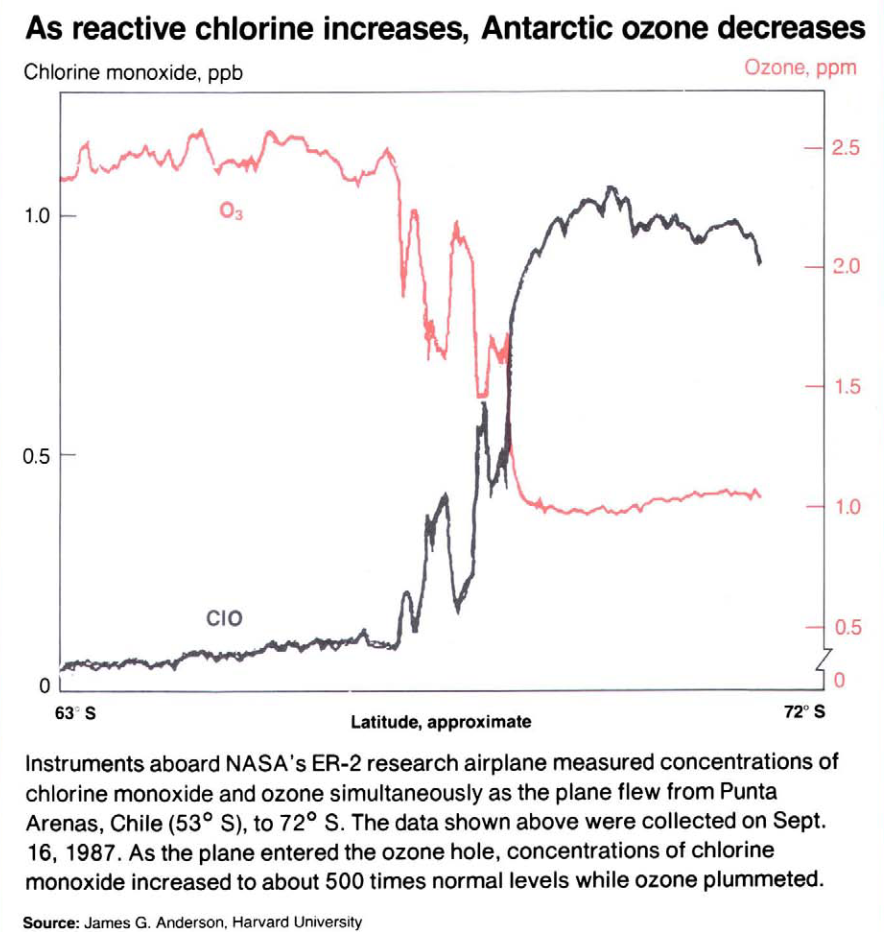
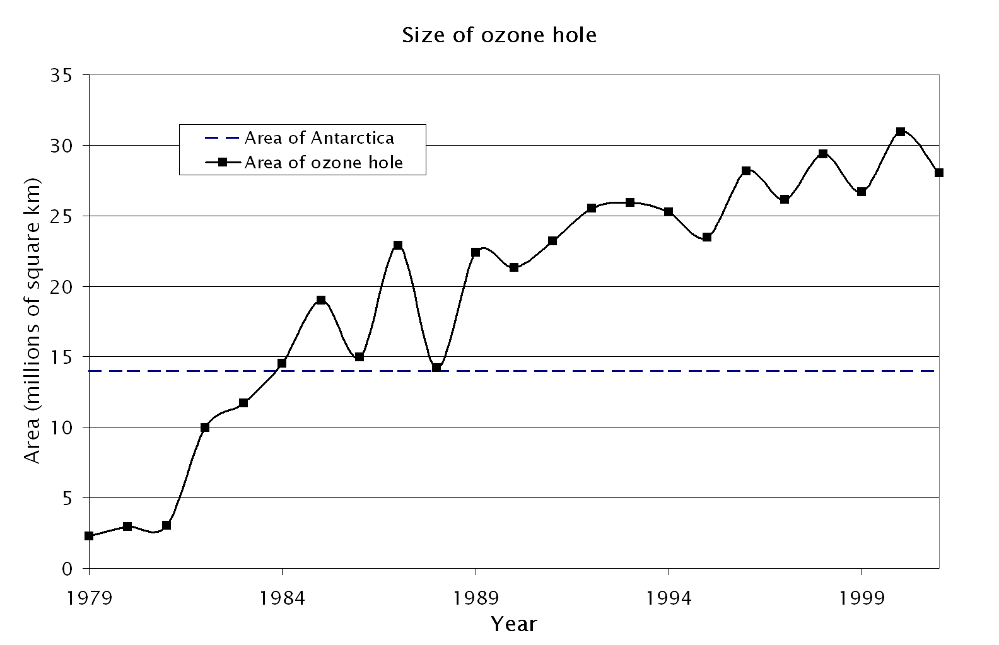
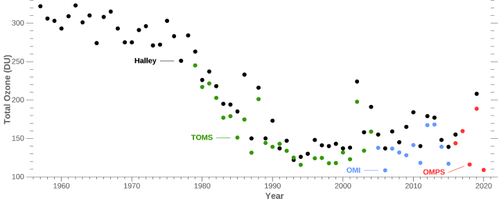
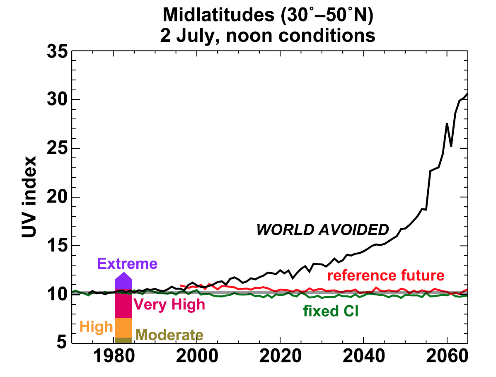
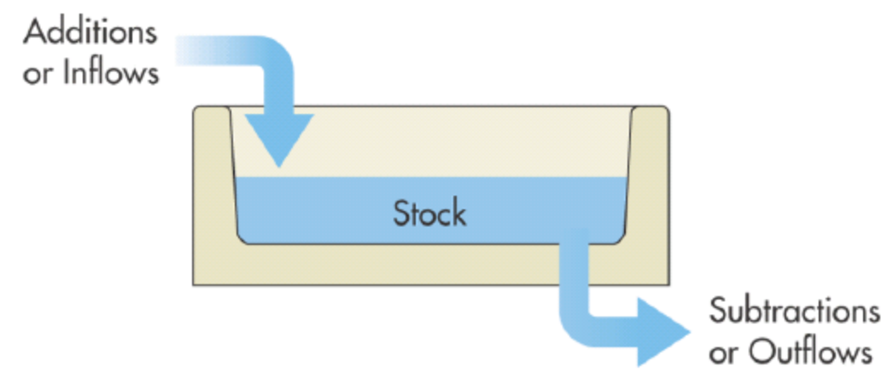
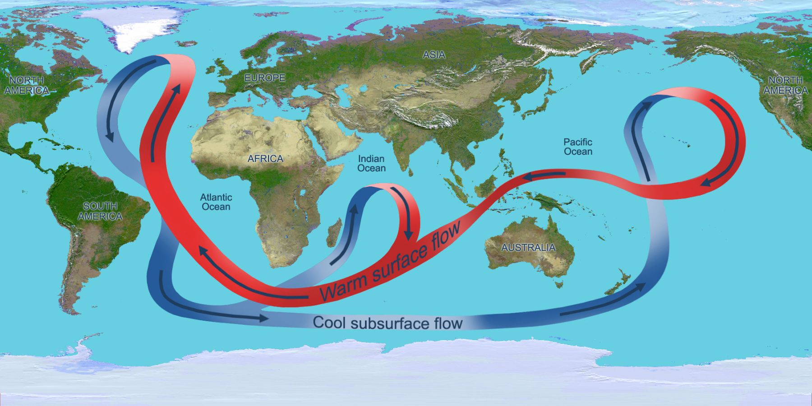
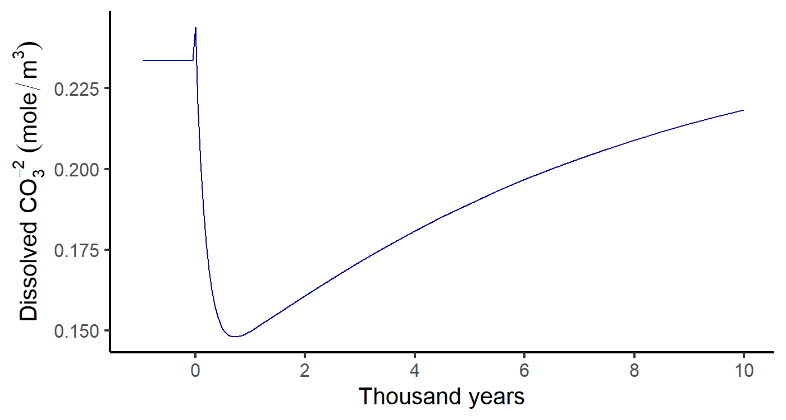

Level of water in the bathtub:
Chemical equilibrium:
\[\small \begin{aligned} \text{emission}\; \left[\frac{\text{Gton C}}{\text{year}}\right] &= \text{decomposition}\; \left[\frac{\text{Gton C}}{\text{year}}\right] \\ \text{decomposition}\; \left[\frac{\text{Gton C}}{\text{year}}\right] &= \frac{\text{inventory}\;[\text{Gton C}]}{\text{lifetime}\;[\text{year}]} \\ \text{emission}\; \left[\frac{\text{Gton C}}{\text{year}}\right] &= \frac{\text{inventory}\;[\text{Gton C}]}{\text{lifetime}\;[\text{year}]} \\ \text{inventory}\; [\text{Gton C}] &= \text{emission}\;\left[\frac{\text{Gton C}}{\text{year}}\right] \times \text{lifetime}\;[\text{year}] \\ \end{aligned} \]

Methane:
CO2
\[
\begin{array}{ccll}
\COO + \water & \rightleftharpoons & \carbonic &
\text{(carbonic acid)} \\
\carbonic & \rightleftharpoons & \mathrm{H}^{+} + \bicarb &
\text{(bicarbonate)} \\
\bicarb & \rightleftharpoons & \mathrm{H}^{+} + \carb &
\text{(carbonate)}
\end{array}
\]
\[ \begin{array}{ccll} \COO + \water & \rightleftharpoons & \carbonic & \text{(carbonic acid)} \\ \carbonic & \rightleftharpoons & \mathrm{H}^{+} + \bicarb & \text{(bicarbonate)} \\ \bicarb & \rightleftharpoons & \mathrm{H}^{+} + \carb & \text{(carbonate)} \end{array} \]
Add the three reactions
\[ \def\scancel#1{\rlap{\smash{\cancel{#1}}}\phantom{#1}} \begin{aligned} {\color{black}\COO} + {\color{black}\water} & \rightleftharpoons {\color{darkgreen}\carbonic}\\ {\color{darkgreen}\carbonic} & \rightleftharpoons {\color{blue}\Hplus} + {\color{darkred}\bicarb}\\ {\color{blue}\Hplus} + {\color{purple}\carb} & \rightleftharpoons {\color{darkred}\bicarb} \end{aligned} \]
to get
\[ \begin{split} {\color{black}\COO} + {\color{black}\water} {}&{} + {\color{darkgreen}\carbonic} + {\color{blue}\Hplus} + {\color{purple}\carb} \\ & \rightleftharpoons {\color{darkgreen}\carbonic} + {\color{blue}\Hplus} + 2\, {\color{darkred}\bicarb} \end{split} \]
Add the three reactions
\[ \begin{aligned} {\color{black}\COO} + {\color{black}\water} & \rightleftharpoons {\color{darkgreen}\carbonic}\\ {\color{darkgreen}\carbonic} & \rightleftharpoons {\color{blue}\Hplus} + {\color{darkred}\bicarb}\\ {\color{blue}\Hplus} + {\color{purple}\carb} & \rightleftharpoons {\color{darkred}\bicarb} \end{aligned} \]
to get
\[ \begin{split} {\color{black}\COO} + {\color{black}\water} {}&{} + {\color{darkgreen}\scancel{\carbonic}} + {\color{blue}\scancel{\Hplus}} + {\color{purple}\carb} \\ & \rightleftharpoons {\color{darkgreen}\scancel{\carbonic}} + {\color{blue}\scancel{\Hplus}} + 2\, {\color{darkred}\bicarb}\\ \end{split} \]
(Cancel common terms on both sides)
Add the three reactions
\[ \begin{aligned} {\color{black}\COO} + {\color{black}\water} & \rightleftharpoons {\color{darkgreen}\carbonic}\\ {\color{darkgreen}\carbonic} & \rightleftharpoons {\color{blue}\Hplus} + {\color{darkred}\bicarb}\\ {\color{blue}\Hplus} + {\color{purple}\carb} & \rightleftharpoons {\color{darkred}\bicarb} \end{aligned} \]
to get
\[ \begin{split} {\color{black}\COO} + {\color{black}\water} {}&{} + {}\phantom{{\color{darkgreen}\carbonic} + {\color{blue}\Hplus}} + {\color{purple}\carb}\\ & \rightleftharpoons \phantom{{\color{darkgreen}\carbonic} + {\color{blue}\Hplus} + {}} 2\, {\color{darkred}\bicarb} \end{split} \]
(Cancel common terms on both sides)
Add the three reactions
\[ \begin{aligned} {\color{black}\COO} + {\color{black}\water} & \rightleftharpoons {\color{darkgreen}\carbonic}\\ {\color{darkgreen}\carbonic} & \rightleftharpoons {\color{blue}\Hplus} + {\color{darkred}\bicarb}\\ {\color{blue}\Hplus} + {\color{purple}\carb} & \rightleftharpoons {\color{darkred}\bicarb} \end{aligned} \]
to get
\[ \begin{aligned} {\color{black}\COO} + {\color{black}\water} + {\color{purple}\carb} & \rightleftharpoons 2\, {\color{darkred}\bicarb} \end{aligned} \]
Now \({\color{black}\Hplus}\) doesn’t matter.
\[{\color{black}\COO} + {\color{black}\water} + {\color{purple}\carb} \rightleftharpoons \color{darkred}{2\, \bicarb}\]


WeatS = weathering of silicate mineralsWeatC = weathering of carbonate mineralsBurC = burial of carbon as limestoneTCO2 = total dissolved carbon dioxidealk = alkalinity (\(\bicarb +
2 \times \carb\))Transition CO2 spike”CO2 is balance of volcanic outgassing and chemical weathering